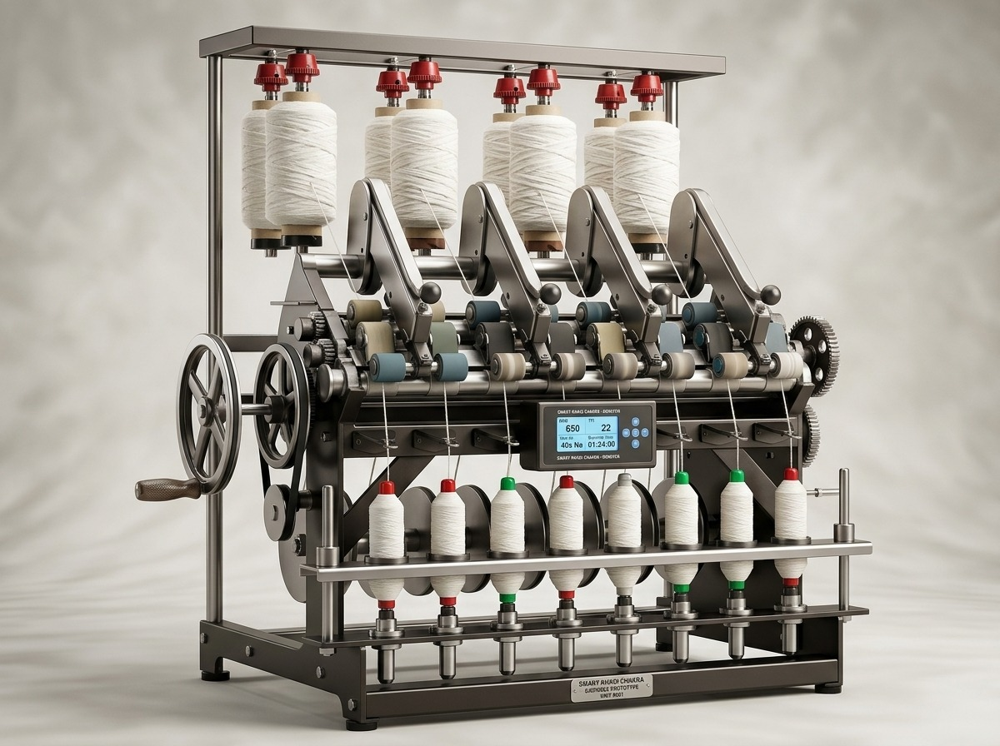
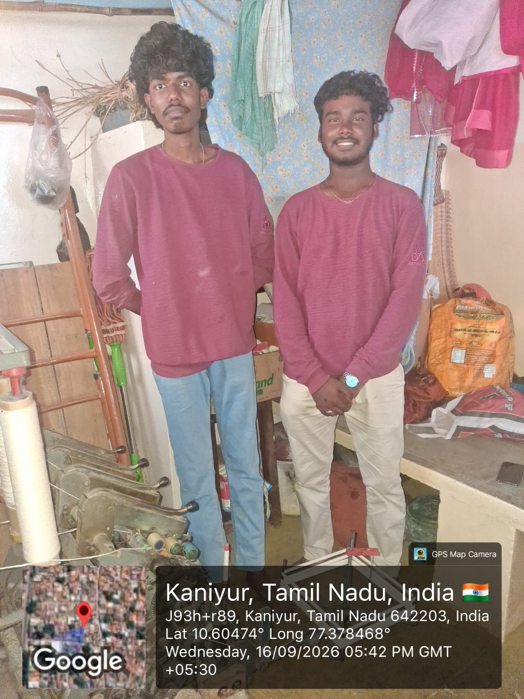
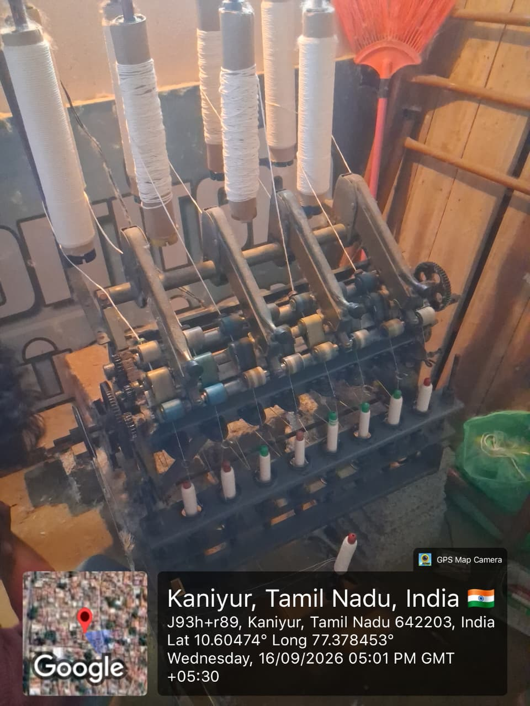

An innovative 8-spindle manual spinning machine engineered to boost artisan productivity, reduce physical fatigue, and preserve Khadi craftsmanship through dual-mode mechanical drive and self-powered smart telemetry.

Traditional charkhas require considerable physical effort. Artisans face continuous strain, inconsistent spinning speeds, and productivity bottlenecks that impact rural livelihoods.
Continuous hand rotation causes severe fatigue, muscle strain, and physical exhaustion during extended work sessions.
Limited spindle count and manual limitations restrict the overall daily yarn output capacity of the artisan.
Conventional charkhas rely strictly on single-input hand operation with no alternative posture or foot drive.
Irregular hand cranking creates speed fluctuations, affecting thread uniformity, yarn twist, and yarn quality.
Artisans have zero live feedback on spinning RPM, production rates, or thread length while operating.
When a thread snaps among multiple spindles, identifying the exact break point immediately is difficult, leading to waste.
Bulky, rigid wooden frames are cumbersome to transport, store, or set up in constrained rural home environments.
Absence of automated counting requires error-prone manual estimation of total yarn spin per shift.
Direct field visits, physical interaction with traditional spinners, and hands-on operational studies shaped the core engineering of Smart Khadhi Chakra.

On-site observation of traditional hand-cranking mechanics revealed extreme shoulder and forearm fatigue after continuous operation, highlighting the crucial need for dual-mode pedal drive and flywheel inertia.

Investigation of multi-spindle yarn breakage demonstrated that undetected yarn snaps lead to roving wastage and uneven twist per inch. This ground reality inspired our per-spindle electronic break alert and telemetry system.
An 8-spindle manual spinning machine with smart monitoring.
Ergonomically positioned handwheel allows smooth manual rotation with minimal shoulder strain.
Alternative pedal input allows artisans to spin using leg power, relieving arm and upper-body fatigue.
Inertial flywheel dampens input speed fluctuations to maintain constant spinning momentum.
Simultaneously drives eight bobbins to significantly increase yarn production per artisan shift.
Collapsible lightweight structural frame adapts to artisan seated height and facilitates easy storage.
Dedicated sensors trigger instant visual LED and buzzer alerts immediately when any thread breaks.
Integrated sensors track spindle rotational velocity, thread tension, and cumulative yarn length.
Clear electronic screen provides live shift stats, spindle output, and operating speed to the artisan.
Built-in kinetic dynamo converts spinning motion into electricity to power all onboard electronics.
Interactive 3D Mechanical + Smart Monitoring Process
Human power can be supplied through the right-side hand crank or central foot pedal. Both mechanisms drive the primary horizontal transmission shaft without any electric motor assist.
Interactive 3D Mechanical + Smart Monitoring Process for the 8-Spindle Foldable Manual Khadi Charkha.
Key functional innovations integrated into the Smart Khadhi Chakra.
The artisan can use either a handwheel or foot pedal, providing ergonomic flexibility and reducing continuous muscle fatigue.
Helps maintain smooth and stable rotation, minimizing sudden speed variations during manual spinning cycles.
Eight spindles can work together to improve production output while keeping manual operation effortless.
Makes the machine easier to carry and store, perfectly suited for rural home-based artisans with limited workspace.
Height can be adjusted according to artisan comfort, ensuring optimal posture whether seated on a chair or floor.
Sensors measure speed, yarn length, tension and production, providing live diagnostic feedback during spinning.
Shows which spindle has a yarn break with localized LED indicators and sound alert, minimizing material wastage.
A small dynamo generates power for electronic monitoring from manual rotation, eliminating reliance on external power.
Hardware components and subsystems that power the Smart Khadhi Chakra.
Dual-flow engineering model illustrating the mechanical transmission path and smart monitoring loop.
Pioneering a harmonious bridge between age-old Khadi manual tradition and contemporary engineering.
Flexible dual hand and foot inputs enable artisans to switch driving postures and avoid localized physical strain.
Simultaneous manual spinning across 8 spindles maximizes shift production without motorized automation.
Inertial energy storage stabilizes cranking velocity, preventing erratic rotational speed and uneven yarn twist.
Ergonomically adaptable chassis fits diverse artisan heights and folds compactly for space-constrained homes.
Continuous sensor assessment of RPM, tension, and yarn length replaces subjective guesswork with accurate data.
Dedicated per-spindle LED markers and audible buzzer immediately pinpoint broken ends to prevent wastage.
Zero external power needed; the machine’s own manual mechanical movement generates the electricity for sensors.
Engineered around human ergonomics, preserving traditional tactile handcrafting while elevating daily comfort.
Every mechanical and electronic feature is purpose-built to empower the weaver with comfort, pride, and higher productivity.
Reduced cranking resistance and dual-drive choice protect artisans from repetitive strain injuries.
Height-adjustable design lets artisans work in natural, relaxed postures over longer working shifts.
8-spindle synchronized output significantly enhances daily yarn output capabilities.
Intuitive manual mechanics require no complex technical re-training for traditional spinners.
Lightweight, foldable frame enables effortless relocation between community centers and homes.
Compact folding footprint saves valuable floor space in small rural living spaces.
Instant visual cues allow immediate re-threading without searching through all 8 spindles.
Live display gives spinners clear transparency over their completed meters and daily production.
Stable mechanical transmission coupled with real-time sensor feedback preserves the authentic texture of hand-spun Khadi.
Flywheel inertia prevents sudden accelerations or drops in rotational speed.
Consistent speed delivers uniform thread diameter and balanced yarn twist per inch.
Tension monitoring and smooth mechanical drive reduce sudden thread snapping.
Rapid break identification avoids run-on wasted roving and tangled spindle bobbins.
Accurate length and shift counters provide verifiable output tracking.
Empowering rural communities through sustainable innovation that honors cultural legacy.
Interactive 3D visualization of how the flywheel stores rotational energy and delivers smoother power to the output shaft.
Artisan Manual Drive: Hand Crank or Foot Pedal Linkage
Rotational power originates from manual human effort. Natural hand cranking or foot pedaling has variable torque pulses, causing dead-center speed dips.
ARTISAN EFFORT ➔ DRIVE MECHANISM ➔ FLYWHEEL ROTATION
Adjustable machine working height for comfortable, efficient, and user-friendly operation.
Optimized for Ergonomic Hand & Foot Drive (160 cm – 174 cm)
Standard neutral ergonomic machine working height providing optimal hand-crank reaching angle and fatigue-free foot-treadle operation.
Real-time yarn tension monitoring and instant fault isolation — identifying individual broken threads, illuminating dedicated red spindle LEDs, and sounding the control panel buzzer.
Yarn passes continuously through 8 spindle paths under calibrated tension.
940nm IR beam continuously verifies thread continuity at 100 Hz.
Snapping interrupts optical beam, tripping alert in <10 ms.
Dedicated LED turns RED and 85 dB buzzer sounds across workshop.
Team NOVAMINDS — Dedicated to spinning tradition and weaving tomorrow.
Team Leader & CAD Engineer
Mechanical Engineering
Website, Documentation & Presentation Lead
Agricultural Engineering
Textile & User-Centric Research Lead
Agricultural Engineering
Testing & Performance Analysis Lead
Mechanical Engineering
Impact & Sustainability Lead
ECE
Technical Documentation Lead
ECE
Expert advisory providing technical direction and domain validation.
Smart Khadhi Chakra makes Khadi spinning easier, more comfortable, and more productive without losing its traditional manual nature.